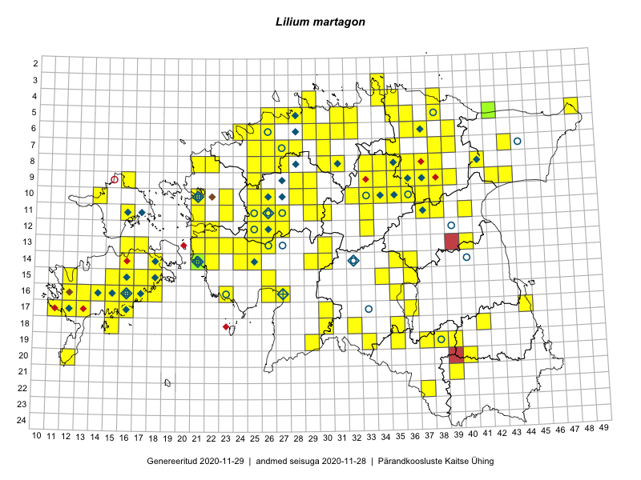

Lilium martagon
Uuendatud: 2016-12-01
Kaardile koondatud taksonid: Lilium martagon L.

Kaart põhineb 296 kirjel.
Kuvatud viited 20 esimesele andmebaasikirjele, ülejäänud PlutoFis
- Peedu Saar, Timo Luhamäe: 2015-05-12: 07-35: ala
- Peedu Saar, Timo Luhamäe: 2015-05-12: 07-35: GPS punkt
- Peedu Saar, Timo Luhamäe: 2015-05-13: 06-39: ala
- Peedu Saar, Timo Luhamäe: 2015-05-13: 06-39: GPS punkt
- Peedu Saar, Timo Luhamäe: 2015-05-13: 07-39: ala
- Peedu Saar, Timo Luhamäe: 2015-05-13: 07-39: GPS punkt
- Peedu Saar, Liina Oja: 2015-05-22: 19-29: ala
- Peedu Saar, Liina Oja: 2015-05-22: 19-29: GPS punkt
- Rein Kalamees: 2015-06-05: 05-32: ala
- Peedu Saar, Liina Oja: 2015-05-15: 16-23: ala
- Peedu Saar, Liina Oja: 2015-05-21: 16-23: GPS punkt
- Peedu Saar, Toomas Kukk: 2015-05-27: 09-16: ala
- Toomas Kukk, Thea Kull, Timo Luhamäe, Ott Luuk, Peedu Saar: 2015-06-28: 13-26: ala
- Toomas Kukk, Thea Kull, Timo Luhamäe, Ott Luuk, Peedu Saar: 2015-06-28: 13-26: GPS punkt
- Peedu Saar, Liina Oja: 2015-06-08: 10-34: GPS punkt
- Toomas Kukk, Raivo Kalle: 2015-05-12: 11-40: ala
- Toomas Kukk, Raivo Kalle: 2015-05-12: 11-40: GPS punkt
- Toomas Kukk, Raivo Kalle: 2015-05-12: 11-40: GPS punkt
- Toomas Kukk, Raivo Kalle: 2015-05-11: 09-36: ala
- Toomas Kukk, Raivo Kalle: 2015-05-11: 09-38: ala